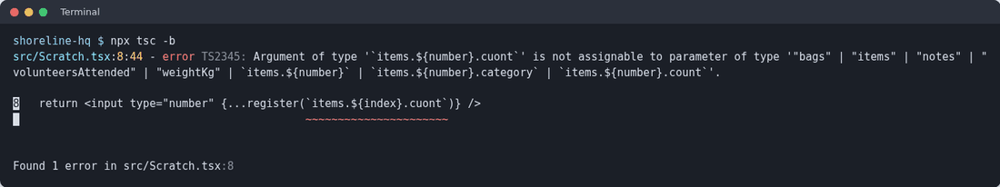
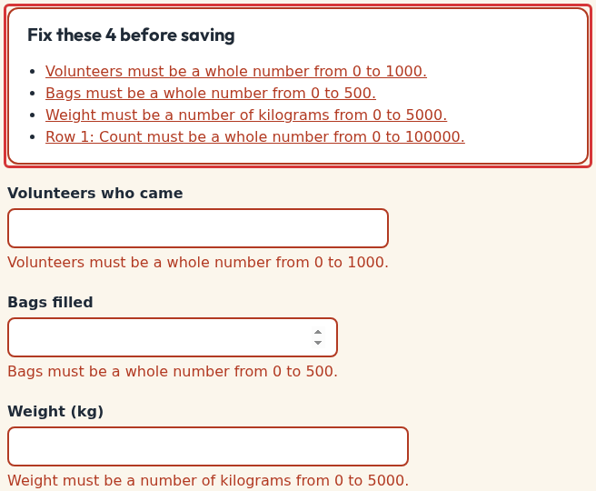
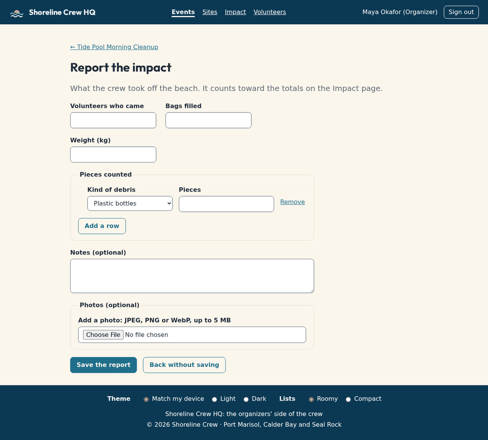
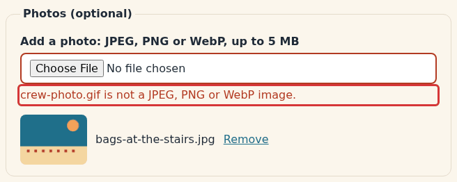
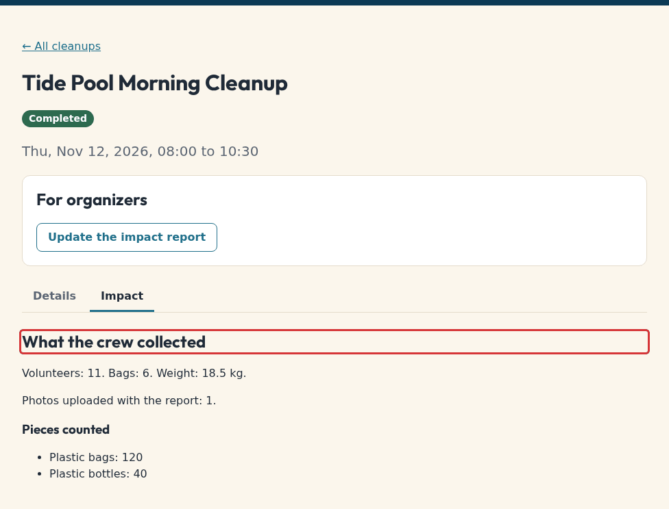
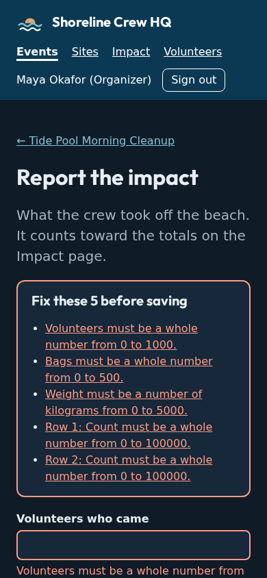

This morning's Tide Pool Morning Cleanup is over. Eleven volunteers filled six bags, Maya has a tally sheet with forty plastic bottles and a hundred and twenty plastic bags on it, and somebody took a good photo of the bags lined up by the stairs. The HQ can show an impact report, but nobody can write one: the numbers on the Impact page stop at the last cleanup the sample data knows about. Today you build the form that closes that gap, and it is the first form in the course that is more than a flat list of boxes: a list that grows and shrinks, a file to upload, and enough fields that a message can hide below the fold.
🎯 Learning Objectives
By the end of this lesson, you will be able to:
Describe a list inside a form with a Zod array schema, including a rule about the whole list that puts its message on the right row
Build rows people can add and remove with React Hook Form's useFieldArray, with stable keys, typed field paths and sensible focus
Build an error summary that takes the focus after a failed save and links to every field with a problem
Upload a file with FormData: check it in the browser, send it without breaking the request, and explain the API's 413 and 415 answers
Save with PUT and refresh every cached answer the save changes
Decide when a long form should become steps, and how to check one step at a time
🛠️ You will build The impact report page for organizers: totals, a debris list that grows and shrinks, photos uploaded to the API, an error summary, and a save that updates the Impact tab and the dashboard
🧩 Stack React Hook Form 7.92, Zod 4.6, TanStack Query 5.107, React 19.3, TypeScript 7.0, Vite 8.3, Node 24 (the versions this lesson was checked with)
🧭 Where you workshoreline-hq in VS Code and the browser, with shoreline-api and the dev server running in two terminals
📦 Code for this lesson
Starting code: lesson-28-start.zip · Finished code: lesson-28-end.zip. Each folder has a README with the commands to run it. Copy .env.example to .env.local in shoreline-hq before npm run dev. For the uploads, any JPEG or PNG photo from your own computer will do.
📑In This Lesson▾
🧾 What an Impact Report Needs
shoreline-api already knows what an impact report is. Its type, NewImpactReport in types.ts (the copy you made in Lesson 2.4), is what PUT /api/events/:id/impact accepts:
shoreline-hq/src/api/types.ts
export interface NewImpactReport {
volunteersAttended: number
bags: number
weightKg: number
items: DebrisCount[]
notes?: string
photoIds?: string[]
}
Three numbers, notes, and two lists. items is a list of { category, count } rows, as long as the crew needs: one cleanup counts bottles and bags, another counts ten kinds of debris. photoIds is a list too, but of ids, not pictures: a photo is uploaded on its own first (POST /api/photos), and the report only points at it. Each of those needs something your two cleanup forms never did:
The report has…
So the form needs…
Section
A list of rows of unknown length
An array in the schema, and rows people can add and remove
A List in a Schema; Rows with useFieldArray
A dozen boxes, some far down the page
One place that lists every problem
An Error Summary
Pictures
A file input, checks before sending, and a different kind of request
Uploading a Photo
Quite a lot to fill in
A decision: one page, or steps?
Should It Be Steps?
💡 Mental model: the tally sheet on the clipboard
After a cleanup, the crew leader fills in a tally sheet. The top has the fixed boxes (people, bags, weight). Below is a table with blank lines: one line per kind of debris, as many lines as needed, and a line crossed out when it was a mistake. Photos are clipped to the back, each one with a number written on it. A field array is that table of lines; the error summary is the note the office clips on top ("line 3: bottles counted twice"); and the photo ids are the numbers on the clipped photos.
🌱 Why this matters
Line items, attachments and long forms are where real apps spend their form code: invoices, expense claims, job applications, inspection reports. Interviews and code reviews often probe exactly these places, because they are where keys, focus and validation go wrong. If parts of today feel fiddly, that is the material, not you: every piece is something you already know (lists and keys from Lesson 3.3, focus from Lesson 4.3, schemas from Lesson 8.1) meeting another piece.
📚 A List in a Schema
A row of the debris list is an object, so it is a z.object; the list is z.array(rowSchema). The fixed numbers need one decision first. Lesson 8.1 used z.coerce.number<string>() for the capacity box, and that would be a quiet bug here:
// Why the report's numbers are not z.coerce.number(): an empty box would pass as 0
import { z } from 'zod'
const coerced = z.coerce.number<string>().int().min(0)
const digitsOnly = z.string().trim().regex(/^\d+$/, 'Enter a whole number.').transform(Number)
console.log(coerced.safeParse('').data)
console.log(digitsOnly.safeParse('').error?.issues[0]?.message)
console.log(digitsOnly.safeParse(' 12 ').data)
Expected output
0
Enter a whole number.
12
Coercion turns an empty box into 0, and for capacity that failed the "1 to 200" rule anyway. For a count, 0 is a valid answer ("no bottles"), so an organizer who skipped a box would report zero without a word. The report's numbers check the text first instead: digits only (a regular expression), then .transform(Number) turns the text into a number. An empty box, -3, 2.5 or lots all fail with the message. One small function builds all four counts:
shoreline-hq/src/api/schemas.ts
// A count typed into a box: digits only, so an empty box is a message, not a silent 0
// (z.coerce.number turns '' into 0, which would count as "nothing collected").
function wholeNumber(max: number, message: string) {
return z
.string()
.trim()
.regex(/^\d+$/, message)
.transform(Number)
.refine((count) => count <= max, message)
}
Its input type is string and its output type number, the same input/output split as Lesson 8.1's capacity. Now the report itself:
shoreline-hq/src/api/schemas.ts
/** One row of the debris list: a category and how many pieces of it */
const debrisCountSchema = z.object({
category: z.enum(debrisCategories, 'Choose a kind of debris.'),
count: wholeNumber(100_000, 'Count must be a whole number from 0 to 100000.'),
})
// The organizers' report after a cleanup. Messages match shoreline-api's own.
export const impactReportSchema = z.object({
volunteersAttended: wholeNumber(1000, 'Volunteers must be a whole number from 0 to 1000.'),
bags: wholeNumber(500, 'Bags must be a whole number from 0 to 500.'),
weightKg: z
.string()
.trim()
.regex(/^\d+(\.\d+)?$/, weightRule)
.transform(Number)
.refine((kg) => kg <= 5000, weightRule),
items: z
.array(debrisCountSchema)
// A rule about the whole list: each kind of debris once. The message goes to the repeated row.
.superRefine(
(items, context) => {
const seen = new Set<string>()
items.forEach((item, index) => {
if (seen.has(item.category)) {
context.addIssue({
code: 'custom',
path: [index, 'category'],
message: `${debrisLabels[item.category]} is already in the list: add to its count.`,
})
}
seen.add(item.category)
})
},
// Like the end-time rule: run as soon as every row's category is valid, whatever the counts
{ when: ({ issues }) => issues.every((issue) => issue.path?.[1] !== 'category') },
),
notes: z.string().trim().max(2000, 'Keep the notes to 2000 characters or fewer.'),
})
z.enum(debrisCategories, …) takes the API's ten categories as a list, so a row's category type is the DebrisCategory union, not any string. The list moves from client.ts to a small shared file in Step 1, with the labels the Impact tab already uses.
"Each kind of debris once" is a rule about the whole list, not a single row, so it goes on the array. superRefine is the version of refine that can report problems itself: context.addIssue with a path relative to the list. [index, 'category'] puts the message on the repeated row's category, exactly where the organizer has to change something.
when is the same idea as the end-time rule in Lesson 8.1: without it, the list rule would wait until every count in every row was valid. Here it only needs the categories.
Try it with Node, as in Lesson 8.1 (Step 1 has you run this file):
// The report schema with Node: a duplicate row and an empty box
import { z } from 'zod'
import { impactReportSchema } from './api/schemas.ts'
const result = impactReportSchema.safeParse({
volunteersAttended: '11',
bags: '',
weightKg: '18.5',
items: [
{ category: 'plastic-bottles', count: '40' },
{ category: 'glass', count: 'lots' },
{ category: 'plastic-bottles', count: '3' },
],
notes: '',
})
if (!result.success) {
for (const issue of result.error.issues) {
console.log(issue.path.join('.'), '→', issue.message)
}
console.log(z.flattenError(result.error).fieldErrors)
}
Expected output
bags → Bags must be a whole number from 0 to 500.
items.1.count → Count must be a whole number from 0 to 100000.
items.2.category → Plastic bottles is already in the list: add to its count.
{
bags: [ 'Bags must be a whole number from 0 to 500.' ],
items: [
'Count must be a whole number from 0 to 100000.',
'Plastic bottles is already in the list: add to its count.'
]
}
Every issue has a path: ['items', 2, 'category'] is "row 3's category" (rows count from 0). Look at the last object too: z.flattenError, which served the flat cleanup forms well, keeps only the first part of each path, so the two row messages lose their rows. For nested data the paths are what matter, and React Hook Form's resolver uses them: the duplicate message lands on items.2.category.
➕ Rows with useFieldArray
The form's values are the schema's input type. Its items is an array, and React Hook Form has a Hook for arrays in a form, useFieldArray:
shoreline-hq/src/components/ImpactReportForm.tsx
// The debris rows: fields has one entry per row, with an id to use as its key
const { fields, append, remove } = useFieldArray({ control, name: 'items' })
const allListed = fields.length === debrisCategories.length
Part
What it does
control
Connects the Hook to this form (it comes from useForm)
name: 'items'
Which array; only names of arrays of objects are allowed, and TypeScript checks it
fields
One entry per row, each with a generated id: the rows to draw
append(row), remove(index)
Add a row at the end, remove one (also insert, move, swap, replace)
Each row's boxes are registered under a path: items.0.count, items.1.count. Rendering the rows is a list like Lesson 3.3's, with two rules: the key is field.id, and the paths use the index:
Why field.id and not the index? The index of a row changes when a row above it is removed; React would then think row 2 became row 1 and reuse its elements. field.id stays with the row's data, which is what a key is for (Lesson 3.3). React Hook Form's documentation asks for field.id as the key too. (Measured here: removing the first of three rows with index keys still showed the right numbers, because React Hook Form writes the values back into its boxes; do not count on that for anything else in a row, such as its own state or the focus.)
Why the index in the paths? The path says where the value lives in the form's data now: after a removal, the second row's count really is items.0.count.
errors.items?.[index]?.count is the same shape as the values: an array of row errors. Optional chaining is needed at every level, because a row with no problem has no entry.
Each label includes "row 1", "row 2" for screen readers (VisuallyHidden from Lesson 3.6): without it, every row's box would just be called "Pieces".
The paths are types, not just strings. Hover register in VS Code and the parameter type lists every path in the form, with `items.${number}.count` standing for every row. A typo is a compile error:
// What register accepts for a list: 'items.0.count' is a path, and TypeScript knows every one
import { zodResolver } from '@hookform/resolvers/zod'
import { useForm } from 'react-hook-form'
import { impactReportSchema } from './api/schemas.ts'
export function TypoRow({ index }: { index: number }) {
const { register } = useForm({ resolver: zodResolver(impactReportSchema) })
return <input type="number" {...register(`items.${index}.cuont`)} />
}

Field paths are types: register knows every path in the report form, including the rows of the debris list, so a typo in items.${index}.count is a compile error.
Expected output
src/Scratch.tsx:8:44 - error TS2345: Argument of type '`items.${number}.cuont`' is not assignable to parameter of type '"bags" | "items" | "notes" | "volunteersAttended" | "weightKg" | `items.${number}` | `items.${number}.category` | `items.${number}.count`'.
8 return <input type="number" {...register(`items.${index}.cuont`)} />
~~~~~~~~~~~~~~~~~~~~~~
Found 1 error in src/Scratch.tsx:8
That union is React Hook Form's FieldPath<ImpactFormValues>, built from the schema's input type with template literal types: a type that describes strings like `items.${number}.count`. The project names it ImpactField and gives it to the fieldProps helper, so every box goes through the check.
Adding and removing rows is where focus needs thought. A new row's kind of debris is chosen for you (the first kind not in the list yet), so the cursor should land in its count; a removed row takes its Remove button with it, so the focus needs a new home:
shoreline-hq/src/components/ImpactReportForm.tsx
function addRow() {
const category = nextCategory(getValues('items'))
if (category === undefined) return
// The new row's count box gets the focus: the kind of debris is already chosen
append({ category, count: '' }, { focusName: `items.${fields.length}.count` })
}
function removeRow(index: number) {
remove(index)
// The Remove button is gone: put the focus somewhere that makes sense
addRef.current?.focus()
}
append moves the focus into the new row by itself; focusName picks which box (fields.length is the new row's index, since the list is one shorter until the next render). getValues('items') reads what the boxes hold right now; fields only has what each row started with. The Add button uses aria-disabled, not disabled, when all ten kinds are listed: a disabled button cannot hold the focus, and Remove sends the focus there.
🚩 An Error Summary
Your cleanup forms show each message under its field and move the focus to the first one. On a long form that is not enough: the first problem may be the only one on screen, a screen reader user hears one message, and a problem in row 7 is easy to miss. The usual answer, used by government services and big shops alike, is an error summary: a box at the top of the form that appears after a failed save, takes the focus, says how many problems there are, and lists each one as a link to its field. The messages under the fields stay, so the summary is a map, not the only copy.

The error summary takes the focus after a failed save: every problem in one place, each one a link to its field. The messages under the fields stay, so nothing depends on the summary alone.
The component knows nothing about impact reports. It takes a list of { id, message }:
shoreline-hq/src/components/ErrorSummary.tsx
import { useEffect, useId, useRef } from 'react'
import type { ErrorItem } from '../utils/formErrors.ts'
import styles from './ErrorSummary.module.css'
interface ErrorSummaryProps {
errors: ErrorItem[]
}
// Every problem in one list at the top of a form, each one a link to its field.
// It takes the focus when it appears: give it a new key on every submit to show it again.
export function ErrorSummary({ errors }: ErrorSummaryProps) {
const summaryRef = useRef<HTMLElement>(null)
const headingId = useId()
useEffect(() => {
summaryRef.current?.focus()
}, [])
if (errors.length === 0) {
return null
}
const count = errors.length === 1 ? 'this' : `these ${errors.length}`
return (
<section ref={summaryRef} tabIndex={-1} aria-labelledby={headingId} className={styles.summary}>
<h2 id={headingId}>Fix {count} before saving</h2>
<ul>
{errors.map((error) => (
<li key={error.id}>
<a
href={`#${error.id}`}
onClick={(event) => {
// Focus the field without adding #id to the address (and to the history)
event.preventDefault()
document.getElementById(error.id)?.focus()
}}
>
{error.message}
</a>
</li>
))}
</ul>
</section>
)
}
Taking the focus. A section with tabIndex={-1} can receive the focus from code (but is not a Tab stop), and aria-labelledby makes its heading its name, so a screen reader says "Fix these 4 before saving" and then reads on. The effect runs once, when the summary appears.
Appearing again. The form renders it as <ErrorSummary key={submitCount} …>. A new key on every Save makes React create a new summary (the same trick that gives each cleanup's page fresh tabs, Lesson 6.3), so the focus moves to it after every failed Save, but not while someone types: fixing a field only shortens the list.
The links. Measured in Chromium: a plain href="#bags" does move the focus into the bags box, but it also writes #bags into the address, which adds a history entry: Back would first undo the jump instead of leaving the page. The click handler focuses the field and keeps the address clean, whatever the browser does with # links.
Where does the list come from? React Hook Form's formState.errors is a tree with the same shape as the values: { bags: { message }, items: [ , { count: { message } } ] }. A small recursive function walks it and builds the paths:
shoreline-hq/src/utils/formErrors.ts
/** Every field's message, in the order the schema checked them. Field ids are their names:
* 'bags', 'items.2.count'. The form-wide root errors are left out (the status line shows those). */
export function listErrors<T extends FieldValues>(errors: FieldErrors<T>): ErrorItem[] {
return collect(errors, '')
}
// errors is a tree: { bags: { message }, items: [ , { count: { message } } ] }
function collect(value: unknown, path: string): ErrorItem[] {
if (typeof value !== 'object' || value === null) {
return []
}
if ('message' in value && typeof value.message === 'string') {
return [{ id: path, message: value.message }]
}
return Object.entries(value).flatMap(([key, inner]) =>
key === 'root' || key === 'ref' ? [] : collect(inner, path === '' ? key : `${path}.${key}`),
)
}
It takes unknown and narrows it, the same skill as Lesson 2.4's API guards: typeof and 'message' in value prove the shape before anything is read. Because each field's id is its path, the path is also the id to link to. One more detail makes the summary read well: out of context, "Count must be a whole number" does not say which count, so the impact form adds the row (withRowNumbers, Step 5): "Row 2: Count must be…". Every line in a summary should make sense on its own.
graph TD
A["Save the report"] --> B["Resolver runs the schema"]
B --> C{"Any problems?"}
C -->|"yes"| D["New summary, takes focus"]
D --> E["Link focuses the field"]
C -->|"no"| F["PUT the report"]
F --> G["Cache updated, go to cleanup"]
One option makes room for the summary: shouldFocusError: false in useForm. By default React Hook Form focuses the first bad field after a failed submit, which would fight with the summary for the focus.
📷 Uploading a Photo
A file box, <input type="file">, does not have a text value. Its files property is a FileList, and each item is a File: a Blob (raw bytes) with a name, a size in bytes and a type such as image/jpeg. TypeScript types input.files as FileList | null and, with noUncheckedIndexedAccess on, input.files?.[0] as File | undefined: no file chosen is a case you must handle.
shoreline-api accepts JPEG, PNG and WebP up to 5 MB, and answers 415 Unsupported Media Type or 413 Payload Too Large otherwise. The HQ checks both before sending anything:
shoreline-hq/src/components/PhotoUpload.tsx
// What shoreline-api accepts (POST /api/photos answers 415 and 413 otherwise)
const photoTypes = ['image/jpeg', 'image/png', 'image/webp']
const maxBytes = 5 * 1024 * 1024
/** What is wrong with a chosen file, before anything is sent (null: nothing) */
function checkPhoto(file: File): string | null {
if (!photoTypes.includes(file.type)) {
return `${file.name} is not a JPEG, PNG or WebP image.`
}
if (file.size > maxBytes) {
const megabytes = (file.size / 1024 / 1024).toFixed(1)
return `${file.name} is ${megabytes} MB. Photos must be 5 MB or smaller.`
}
return null
}
Why check at all, when the file box has accept="image/jpeg,image/png,image/webp"? Because accept is a hint to the file picker. Most pickers have an "All files" choice, drag and drop ignores it, and nothing stops a 40 MB photo straight off a phone. Measured with the checks removed: a GIF went to the API and came back as 415, "Photos must be JPEG, PNG or WebP images."; a 5.6 MB PNG was sent in full before the API answered 413, "Photos must be 5 MB or smaller.". The browser check gives the same answer at once, without uploading anything.
Sending a file is not JSON. The request body is multipart/form-data: several parts, each with a name, separated by a random boundary string. FormData builds it:
shoreline-hq/src/api/client.ts
/** POST /api/photos (signed in): upload one image file as multipart/form-data */
export async function postPhoto(file: File): Promise<Photo> {
const body = new FormData()
body.append('photo', file)
// No Content-Type header: fetch writes multipart/form-data with the boundary that separates the parts
const response = await request('/photos', { method: 'POST', body })
const data: unknown = await response.json()
if (!isPhoto(data)) {
throw new Error('Unexpected data from POST /api/photos')
}
return data
}
The field name, photo, is the one the API's documentation asks for. Notice what is missing: a Content-Type header. When the body is a FormData, fetch writes multipart/form-data; boundary=… itself, with the boundary it used. Writing the header yourself drops the boundary, and the server cannot find the parts (Common Mistakes has the measured result). The shared request() from Lesson 5.2 still adds the sign-in token: uploads need a signed-in user.
graph TD
A["Choose a file"] --> B{"Type and size OK?"}
B -->|"no"| C["Message, nothing sent"]
B -->|"yes"| D["POST /api/photos"]
D --> E{"API checks again"}
E -->|"201"| F["Keep the photo id"]
E -->|"413 or 415"| C
F --> G["Save: PUT with photoIds"]
The photo is uploaded as soon as it is chosen, and the report keeps only its id. That is how the API is designed (the phone app in the React Native course uploads photos the same way, sometimes long before the report), and it has a pleasant side effect: by the time the organizer presses Save, the slow part is done. The photo appears in the list from the API's own address, the url in its answer, which also proves the upload worked.
🛑 Files are untrusted input
The browser's check is a courtesy, like the schema (Lesson 8.1): browsers usually work out file.type from the file's name, so a renamed file passes it. The server must check the size and the real content, store uploads away from code, and never trust the file name. shoreline-api checks the type and the size and keeps photos in memory only; a production API would also read the file's first bytes to confirm it is an image. Never put an upload service's secret key in front-end code to "upload directly": anything in the bundle is public (Lesson 2.4).
🪜 Should It Be Steps?
Long forms are often split into steps: "1 of 3: Your details". Steps help when the parts are truly separate, when later questions depend on earlier answers, or on a phone, where one long page is tiring. They also cost something: more clicks, a "where was I?" feeling, and more code (checking each step, focus on every change, Back without losing anything).
Steps fit when…
One page fits when…
Each part is a separate task (shipping, then payment)
People fill it in one sitting from one source (a tally sheet)
Answers decide what is asked next
Every field is always asked
People need to review before a big commitment
Saving can be done again (a report can be replaced)
The impact report sits firmly in the right column: an organizer copies one tally sheet at a desk, every field is always there, and a mistake is fixed by saving again. So the HQ keeps it on one page, with the error summary doing the job steps would do for long forms. Splitting it just to practice would be a fake wizard. But you will meet step forms, so here is how they work with React Hook Form (Exercise 3 builds this version, if you want to try):
ImpactReportForm.tsx, Exercise 3 version (not in the project)
// Show a step and move the focus to its heading, so keyboard and screen reader users start
// there (flushSync: React updates the page first, then the heading can take the focus)
function showStep(number: 1 | 2) {
flushSync(() => setStep(number))
stepRef.current?.focus()
}
// Step 1's fields are checked before step 2 appears (Save checks the whole form again)
async function next() {
if (await trigger(['volunteersAttended', 'bags', 'weightKg'])) {
showStep(2)
}
}
One form, one useForm. The steps are parts of the same form, shown one at a time, so the values, the schema and the Save stay as they are.
trigger(names) checks some fields now and resolves to true when they are fine: Next only checks step 1's boxes.
Hide, do not unmount. Each step is a div with the hidden attribute, so its boxes stay registered. A trap measured here: hidden is just display: none in the browser's own styles, and any class that sets display: flex wins over it. With the step's class setting display: flex, both steps showed at once until the CSS Module said .step[hidden] { display: none; }.
Move the focus to the new step's heading, or keyboard and screen reader users are left on a button that just vanished. flushSync makes React update the page first, so the heading already says "Step 2 of 2" when it takes the focus.
⚠️ Common Mistakes
⚠️ Writing the Content-Type header for a file upload
Measured: the upload answered 400, and the form said "bags-at-the-stairs.jpg was not uploaded. The server had a problem (400). Try again in a moment." The header has no boundary=…, so shoreline-api cannot split the body into parts and never finds the photo field (its answer says "Attach an image in a field named photo."). Trying again would not help. Leave the header out whenever the body is a FormData: fetch writes the right one.
⚠️ Removing a row and leaving the focus behind
Without addRef.current?.focus() in removeRow, the Remove button disappears while it has the focus. Measured: after removing row 1, document.activeElement was the page's <body>. A keyboard user's next Tab starts again from the top of the page, and a screen reader says nothing at all about what happened. Whenever a click removes the element that was clicked, decide where the focus goes next: a neighbor, the list's heading, or (as here) the button that adds rows.
⚠️ Invalidating, but not using the answer you already have
PUT answers with the saved report. With only the invalidations (no setQueryData), measured on an API slowed down with --latency=1000 after changing Storm Debris Sweep's volunteers from 10 to 12: the Impact tab first showed "Volunteers: 10." from the cache, then "Volunteers: 12." a second later. With the answer written into the cache first, it showed 12 straight away. Invalidation means "this may be out of date, fetch it again"; when the server has just told you the new value, put it in the cache and skip the guessing. Keep the invalidations too: the cleanup's status and the dashboard's totals changed on the server, and only a fetch brings those.
⚠️ hidden on something with display set
The hidden attribute only works through the browser's built-in display: none, and a class with display: flex (or grid, or block) overrides it. Measured in the step version of the form: with the step's class setting display: flex and no other rule, step 2's count box was visible on step 1. Either put hidden on an element without a display rule, or add .step[hidden] { display: none; } to the CSS Module.
🛠️ Project: The Impact Report
Step 1 shares the debris list and writes the schema, Step 2 adds the save and the upload to the API layer, Steps 3 and 4 build the two new pieces (the error summary and the photo upload), Step 5 puts the form on its own page, and Step 6 tries everything. Keep shoreline-api and npm run dev running, and sign in as an organizer (maya.okafor@example.com, password shoreline-demo). No new packages today: React Hook Form and Zod are already installed.
Step 1: Share the debris list, write the schema (12 min)
The Impact tab's labels and the API client's category list are about to get a third user, so they move to one file. Create src/utils/debris.ts:
shoreline-hq/src/utils/debris.ts
// The API's debris categories and the HQ's words for them (GET /api/meta lists the same ones).
// Used by the impact report on a cleanup's page and by the form that writes it.
import type { DebrisCategory } from '../api/types.ts'
/** Every category, in the API's order */
export const debrisCategories: DebrisCategory[] = [
'plastic-bottles', 'plastic-bags', 'food-wrappers', 'bottle-caps', 'cigarette-butts',
'fishing-gear', 'glass', 'metal', 'foam', 'other',
]
/** What the HQ calls each category */
export const debrisLabels: Record<DebrisCategory, string> = {
'plastic-bottles': 'Plastic bottles',
'plastic-bags': 'Plastic bags',
'food-wrappers': 'Food wrappers',
'bottle-caps': 'Bottle caps',
'cigarette-butts': 'Cigarette butts',
'fishing-gear': 'Fishing line and nets',
glass: 'Glass',
metal: 'Metal and cans',
foam: 'Foam pieces',
other: 'Other',
}
In src/components/ImpactSummary.tsx, import the labels instead of defining them:
shoreline-hq/src/components/ImpactSummary.tsx
import { useSuspenseQuery } from '@tanstack/react-query'
import { eventImpactQuery } from '../api/queries.ts'
-import type { DebrisCategory } from '../api/types.ts'
+import { debrisLabels } from '../utils/debris.ts'
import { DataList } from './DataList.tsx'
-
-// The API's labels for its debris categories (GET /api/meta lists the same ones)
-const debrisLabels: Record<DebrisCategory, string> = {
- 'plastic-bottles': 'Plastic bottles',
- 'plastic-bags': 'Plastic bags',
- 'food-wrappers': 'Food wrappers',
- 'bottle-caps': 'Bottle caps',
- 'cigarette-butts': 'Cigarette butts',
- 'fishing-gear': 'Fishing line and nets',
- glass: 'Glass',
- metal: 'Metal and cans',
- foam: 'Foam pieces',
- other: 'Other',
-}
interface ImpactSummaryProps {
and, while you are there, say when a report came with photos:
shoreline-hq/src/components/ImpactSummary.tsx
</p>
{report.notes !== '' && <p>{report.notes}</p>}
+ {report.photoIds.length > 0 && <p>Photos uploaded with the report: {report.photoIds.length}.</p>}
<h3>Pieces counted</h3>
<DataList
In src/api/client.ts, import the list at the top and delete the old one above isDebrisCount:
shoreline-hq/src/api/client.ts
-// Shoreline Crew HQ's API client (Lessons 2.4, 4.1, 5.2, 5.4, 6.2, 6.3, 7.1 and 7.2).
+// Shoreline Crew HQ's API client (Lessons 2.4, 4.1, 5.2, 5.4, 6.2, 6.3, 7.1, 7.2 and 8.2).
// Data from the API is unknown until a check proves its shape.
+import { debrisCategories } from '../utils/debris.ts'
import type {
ApiErrorBody,
shoreline-hq/src/api/client.ts
}
-const debrisCategories: DebrisCategory[] = [
- 'plastic-bottles', 'plastic-bags', 'food-wrappers', 'bottle-caps', 'cigarette-butts',
- 'fishing-gear', 'glass', 'metal', 'foam', 'other',
-]
-
function isDebrisCount(value: unknown): value is DebrisCount {
return (
Now the schema. In src/api/schemas.ts, change the comment and the imports at the top:
shoreline-hq/src/api/schemas.ts
-// Shoreline Crew HQ's Zod schemas (Lesson 8.1): each one is a type AND its checks, written once.
+// Shoreline Crew HQ's Zod schemas (Lessons 8.1 and 8.2): each one is a type AND its checks, written once.
import { z } from 'zod'
+import { debrisCategories, debrisLabels } from '../utils/debris.ts'
import { toDateString } from '../utils/format.ts'
and add everything below at the end of the file (you read each part in "A List in a Schema"):
shoreline-hq/src/api/schemas.ts
// A count typed into a box: digits only, so an empty box is a message, not a silent 0
// (z.coerce.number turns '' into 0, which would count as "nothing collected").
function wholeNumber(max: number, message: string) {
return z
.string()
.trim()
.regex(/^\d+$/, message)
.transform(Number)
.refine((count) => count <= max, message)
}
const weightRule = 'Weight must be a number of kilograms from 0 to 5000.'
/** One row of the debris list: a category and how many pieces of it */
const debrisCountSchema = z.object({
category: z.enum(debrisCategories, 'Choose a kind of debris.'),
count: wholeNumber(100_000, 'Count must be a whole number from 0 to 100000.'),
})
// The organizers' report after a cleanup. Messages match shoreline-api's own.
export const impactReportSchema = z.object({
volunteersAttended: wholeNumber(1000, 'Volunteers must be a whole number from 0 to 1000.'),
bags: wholeNumber(500, 'Bags must be a whole number from 0 to 500.'),
weightKg: z
.string()
.trim()
.regex(/^\d+(\.\d+)?$/, weightRule)
.transform(Number)
.refine((kg) => kg <= 5000, weightRule),
items: z
.array(debrisCountSchema)
// A rule about the whole list: each kind of debris once. The message goes to the repeated row.
.superRefine(
(items, context) => {
const seen = new Set<string>()
items.forEach((item, index) => {
if (seen.has(item.category)) {
context.addIssue({
code: 'custom',
path: [index, 'category'],
message: `${debrisLabels[item.category]} is already in the list: add to its count.`,
})
}
seen.add(item.category)
})
},
// Like the end-time rule: run as soon as every row's category is valid, whatever the counts
{ when: ({ issues }) => issues.every((issue) => issue.path?.[1] !== 'category') },
),
notes: z.string().trim().max(2000, 'Keep the notes to 2000 characters or fewer.'),
})
/** What the report form's fields hold: text, as typed */
export type ImpactFormValues = z.input<typeof impactReportSchema>
/** What a successful check gives back: numbers, ready to send */
export type ImpactFormData = z.output<typeof impactReportSchema>
Create src/try-impact.ts with the test file from that section (it starts with // The report schema with Node) and run it:
node src/try-impact.ts
You should see the three messages with their paths. Change 'lots' to '5' and the third row's category to 'foam': the duplicate message disappears. When you are done, delete src/try-impact.ts.
Step 2: Save and upload in the API layer (8 min)
In src/api/client.ts, add NewImpactReport and Photo to the type import:
Add a guard for the API's answer to an upload after isImpactTotals:
shoreline-hq/src/api/client.ts
/** An uploaded photo, as POST /api/photos sends it back */
function isPhoto(value: unknown): value is Photo {
return (
isRecord(value) &&
typeof value.id === 'string' &&
typeof value.url === 'string' &&
typeof value.contentType === 'string' &&
typeof value.bytes === 'number'
)
}
Let sendJSON send a PUT too:
shoreline-hq/src/api/client.ts
}
-/** Send JSON with POST or PATCH, and check the JSON that comes back */
+/** Send JSON with POST, PATCH or PUT, and check the JSON that comes back */
async function sendJSON<T>(
- method: 'POST' | 'PATCH',
+ method: 'POST' | 'PATCH' | 'PUT',
path: string,
body: unknown,
and add the two requests at the end of the file:
shoreline-hq/src/api/client.ts
/** PUT /api/events/:id/impact (organizers): save or replace a cleanup's impact report */
export function putImpact(eventId: string, report: NewImpactReport): Promise<ImpactReport> {
return sendJSON('PUT', `/events/${encodeURIComponent(eventId)}/impact`, report, isImpactReport)
}
/** POST /api/photos (signed in): upload one image file as multipart/form-data */
export async function postPhoto(file: File): Promise<Photo> {
const body = new FormData()
body.append('photo', file)
// No Content-Type header: fetch writes multipart/form-data with the boundary that separates the parts
const response = await request('/photos', { method: 'POST', body })
const data: unknown = await response.json()
if (!isPhoto(data)) {
throw new Error('Unexpected data from POST /api/photos')
}
return data
}
PUT means "store this as the whole report": sending it twice gives the same result, so saving a corrected report is safe. Now the mutations. In src/api/mutations.ts, update the imports:
shoreline-hq/src/api/mutations.ts
-// Shoreline Crew HQ's changes (Lessons 7.2 and 8.1): one mutationOptions factory per kind of change.
+// Shoreline Crew HQ's changes (Lessons 7.2, 8.1 and 8.2): one mutationOptions factory per kind of change.
// Each one says what to send, and which cached answers are out of date afterwards.
import { mutationOptions } from '@tanstack/react-query'
import type { Mark } from '../reducers/rosterReducer.ts'
-import { patchEvent, patchSignup, postEvent } from './client.ts'
-import { queryClient, rosterQuery } from './queries.ts'
-import type { EventChanges, NewEvent, SignupStatus } from './types.ts'
+import { patchEvent, patchSignup, postEvent, postPhoto, putImpact } from './client.ts'
+import { eventImpactQuery, queryClient, rosterQuery } from './queries.ts'
+import type { EventChanges, NewEvent, NewImpactReport, SignupStatus } from './types.ts'
/** Plan a cleanup. Waits for the API: the new cleanup's id comes from it. */
and add two factories after updateEventMutation:
shoreline-hq/src/api/mutations.ts
/** Which cleanup the report is for, and the report */
export interface ImpactUpdate {
eventId: string
report: NewImpactReport
}
/** Save a cleanup's impact report. Waits for the API, then refreshes what the report changes. */
export function saveImpactMutation() {
return mutationOptions({
mutationFn: ({ eventId, report }: ImpactUpdate) => putImpact(eventId, report),
onSuccess: (saved, { eventId }) => {
// The API answers with the saved report: put it in the cache, so the Impact tab shows
// the new numbers at once instead of the old report while it fetches again
queryClient.setQueryData(eventImpactQuery(eventId).queryKey, saved)
// ['events']: the cleanup (now completed) and every list; ['impact']: the dashboard's totals
return Promise.all([
queryClient.invalidateQueries({ queryKey: ['events'] }),
queryClient.invalidateQueries({ queryKey: ['impact'] }),
])
},
})
}
/** Upload one photo. Nothing cached shows photos, so there is nothing to invalidate. */
export function uploadPhotoMutation() {
return mutationOptions({
mutationFn: (file: File) => postPhoto(file),
})
}
Use Lesson 7.2's question, "what could this change have changed?". The report's own cache entry (['events', 'impact', id]) gets the API's answer directly. The cleanup itself becomes completed when its first report is saved, so every ['events'] query is out of date, and the dashboard's totals (['impact'], Lesson 7.1) count every report. Lesson 7.2 promised that ['impact'] would be invalidated by the first change that affects the totals: this is it.
Step 3: The error summary (8 min)
Create src/utils/formErrors.ts, the walker from "An Error Summary":
shoreline-hq/src/utils/formErrors.ts
// Turning React Hook Form's errors into one list, for an error summary (Lesson 8.2)
import type { FieldErrors, FieldValues } from 'react-hook-form'
/** One problem: the message, and the id of the field it belongs to */
export interface ErrorItem {
id: string
message: string
}
/** Every field's message, in the order the schema checked them. Field ids are their names:
* 'bags', 'items.2.count'. The form-wide root errors are left out (the status line shows those). */
export function listErrors<T extends FieldValues>(errors: FieldErrors<T>): ErrorItem[] {
return collect(errors, '')
}
// errors is a tree: { bags: { message }, items: [ , { count: { message } } ] }
function collect(value: unknown, path: string): ErrorItem[] {
if (typeof value !== 'object' || value === null) {
return []
}
if ('message' in value && typeof value.message === 'string') {
return [{ id: path, message: value.message }]
}
return Object.entries(value).flatMap(([key, inner]) =>
key === 'root' || key === 'ref' ? [] : collect(inner, path === '' ? key : `${path}.${key}`),
)
}
FieldErrors<T> is React Hook Form's type for formState.errors; the function is generic, so any form can use it (Exercise 1 does). Then the component: create src/components/ErrorSummary.tsx with the code from that section, and its styles, src/components/ErrorSummary.module.css:
The red border and red links use the --error token, so dark mode works without another rule.
Step 4: The photo upload (12 min)
Create src/components/PhotoUpload.tsx:
shoreline-hq/src/components/PhotoUpload.tsx
import { useMutation } from '@tanstack/react-query'
import { useState, type ChangeEvent } from 'react'
import { ApiError, describeError } from '../api/client.ts'
import { uploadPhotoMutation } from '../api/mutations.ts'
import { Button } from './Button.tsx'
import { FieldError } from './FieldError.tsx'
import formStyles from './Form.module.css'
import styles from './PhotoUpload.module.css'
import { VisuallyHidden } from './VisuallyHidden.tsx'
/** A photo the API has saved: its id goes into the report */
export interface UploadedPhoto {
id: string
url: string
name: string
}
// What shoreline-api accepts (POST /api/photos answers 415 and 413 otherwise)
const photoTypes = ['image/jpeg', 'image/png', 'image/webp']
const maxBytes = 5 * 1024 * 1024
/** What is wrong with a chosen file, before anything is sent (null: nothing) */
function checkPhoto(file: File): string | null {
if (!photoTypes.includes(file.type)) {
return `${file.name} is not a JPEG, PNG or WebP image.`
}
if (file.size > maxBytes) {
const megabytes = (file.size / 1024 / 1024).toFixed(1)
return `${file.name} is ${megabytes} MB. Photos must be 5 MB or smaller.`
}
return null
}
interface PhotoUploadProps {
photos: UploadedPhoto[]
onUploaded: (photo: UploadedPhoto) => void
onRemove: (id: string) => void
}
// Choose a photo, check it, upload it at once, and list what is uploaded
export function PhotoUpload({ photos, onUploaded, onRemove }: PhotoUploadProps) {
const upload = useMutation(uploadPhotoMutation())
const [problem, setProblem] = useState<string | null>(null)
async function choose(event: ChangeEvent<HTMLInputElement>) {
const input = event.currentTarget
const file = input.files?.[0]
// Empty the box, so choosing the same file again still counts as a change
input.value = ''
if (file === undefined) return
const tooBad = checkPhoto(file)
setProblem(tooBad)
if (tooBad !== null) return
try {
const photo = await upload.mutateAsync(file)
onUploaded({ id: photo.id, url: photo.url, name: file.name })
} catch (error: unknown) {
// 413 and 415 come with a message written for people; anything else gets the usual sentence
const refused = error instanceof ApiError && (error.status === 413 || error.status === 415)
setProblem(`${file.name} was not uploaded. ${refused ? error.message : describeError(error)}`)
}
}
return (
<fieldset className={styles.photos}>
<legend>Photos (optional)</legend>
<div className={formStyles.field}>
<label htmlFor="photo">Add a photo: JPEG, PNG or WebP, up to 5 MB</label>
<input
id="photo"
type="file"
accept="image/jpeg,image/png,image/webp"
onChange={choose}
aria-invalid={problem !== null}
aria-describedby={problem === null ? undefined : 'photo-error'}
/>
<FieldError id="photo-error" messages={problem === null ? undefined : [problem]} />
</div>
<p role="status" className={styles.status}>
{upload.isPending && `Uploading ${upload.variables.name}…`}
</p>
{photos.length > 0 && (
<ul className={styles.list}>
{photos.map((photo) => (
<li key={photo.id}>
{/* The file name beside it says which photo it is: the preview needs no alt text */}
<img src={photo.url} alt="" width={96} height={72} />
<span>{photo.name}</span>
<Button variant="link" onClick={() => onRemove(photo.id)}>
Remove<VisuallyHidden> {photo.name}</VisuallyHidden>
</Button>
</li>
))}
</ul>
)}
</fieldset>
)
}
choose runs on the file box's change. It reads the file, then empties the box (input.value = '' is the one value you may set on a file input), so picking the same photo again after an error still counts as a change.
The component owns the upload (its own useMutation) and its message; the list of uploaded photos belongs to the form, which needs their ids for the report. So the photos come in as a prop, and two callbacks report changes: the "lift state up" pattern from Lesson 3.4.
413 and 415 come with a sentence written for people (the API's message), so the HQ shows it; anything else goes through describeError, as everywhere else.
The preview has alt="": the file name is right beside it, so the picture adds nothing a screen reader user is missing, and repeating the name would only add noise. Remove names the photo too ("Remove bags-at-the-stairs.jpg").
Remove only takes the photo out of this report: the API has no way to delete an upload, and keeps it in memory until it restarts.
Step 5: The form, its page and the way in (22 min)
First, the small helpers the form and the page share. Create src/utils/impactForm.ts:
shoreline-hq/src/utils/impactForm.ts
// The impact report form (Lesson 8.2): its starting values and small helpers.
// The rules live in impactReportSchema (api/schemas.ts).
import type { FieldPath } from 'react-hook-form'
import type { ImpactFormValues } from '../api/schemas.ts'
import type { CleanupEvent, DebrisCategory, ImpactReport } from '../api/types.ts'
import { debrisCategories } from './debris.ts'
import type { ErrorItem } from './formErrors.ts'
import { toDateString } from './format.ts'
/** A field of the report form: 'bags', or a row's field such as 'items.2.count' */
export type ImpactField = FieldPath<ImpactFormValues>
// Read once, when the app starts (like the check-in desk's date)
const today = toDateString(new Date())
/** Impact can be reported once a cleanup has taken place: the API has the same rule */
export function canReportImpact(event: CleanupEvent): boolean {
return event.status === 'completed' || (event.status === 'scheduled' && event.date <= today)
}
/** The saved report as text for the form, or an empty report with one row to fill in */
export function toImpactValues(report: ImpactReport | null): ImpactFormValues {
if (report === null) {
return {
volunteersAttended: '',
bags: '',
weightKg: '',
items: [{ category: 'plastic-bottles', count: '' }],
notes: '',
}
}
return {
volunteersAttended: String(report.volunteersAttended),
bags: String(report.bags),
weightKg: String(report.weightKg),
items: report.items.map((item) => ({ category: item.category, count: String(item.count) })),
notes: report.notes,
}
}
/** The first kind of debris that is not in the list yet (undefined when all of them are) */
export function nextCategory(items: ImpactFormValues['items']): DebrisCategory | undefined {
return debrisCategories.find((category) => items.every((item) => item.category !== category))
}
/** "Row 2: …" for the debris list's messages: in the error summary they appear without their row */
export function withRowNumbers(errors: ErrorItem[]): ErrorItem[] {
return errors.map((error) => {
const row = /^items\.(\d+)\./.exec(error.id)?.[1]
if (row === undefined) return error
return { ...error, message: `Row ${Number(row) + 1}: ${error.message}` }
})
}
canReportImpact is the API's rule ("a cleanup that has taken place": completed, or scheduled for today or earlier) written once for the HQ. toImpactValues turns a saved report into text for the boxes, like Lesson 8.1's toFormValues; a new report starts with one row. Now the form. Create src/components/ImpactReportForm.tsx:
shoreline-hq/src/components/ImpactReportForm.tsx
import { zodResolver } from '@hookform/resolvers/zod'
import { useMutation } from '@tanstack/react-query'
import { useRef, useState } from 'react'
import { useFieldArray, useForm } from 'react-hook-form'
import { Link, useNavigate } from 'react-router'
import { ApiError, describeError } from '../api/client.ts'
import { saveImpactMutation } from '../api/mutations.ts'
import { impactReportSchema, type ImpactFormData } from '../api/schemas.ts'
import type { CleanupEvent, ImpactReport } from '../api/types.ts'
import { debrisCategories, debrisLabels } from '../utils/debris.ts'
import { listErrors } from '../utils/formErrors.ts'
import { nextCategory, toImpactValues, withRowNumbers, type ImpactField } from '../utils/impactForm.ts'
import { Button } from './Button.tsx'
import { ErrorSummary } from './ErrorSummary.tsx'
import { FieldError } from './FieldError.tsx'
import formStyles from './Form.module.css'
import styles from './ImpactReportForm.module.css'
import { PhotoUpload, type UploadedPhoto } from './PhotoUpload.tsx'
import { VisuallyHidden } from './VisuallyHidden.tsx'
interface ImpactReportFormProps {
event: CleanupEvent
/** The saved report, or null: the form starts from it */
report: ImpactReport | null
}
export function ImpactReportForm({ event, report }: ImpactReportFormProps) {
const save = useMutation(saveImpactMutation())
const navigate = useNavigate()
const [photos, setPhotos] = useState<UploadedPhoto[]>([])
const addRef = useRef<HTMLButtonElement>(null)
const {
control,
register,
handleSubmit,
getValues,
setError,
formState: { errors, isSubmitting, submitCount },
} = useForm({
resolver: zodResolver(impactReportSchema),
defaultValues: toImpactValues(report),
// The error summary takes the focus after a failed submit, not the first field
shouldFocusError: false,
})
// The debris rows: fields has one entry per row, with an id to use as its key
const { fields, append, remove } = useFieldArray({ control, name: 'items' })
const allListed = fields.length === debrisCategories.length
// Photos already in a saved report stay in it
const keptPhotoIds = report?.photoIds ?? []
// handleSubmit calls this only when the schema found nothing to fix
async function submit(data: ImpactFormData) {
const photoIds = [...keptPhotoIds, ...photos.map((photo) => photo.id)]
try {
await save.mutateAsync({ eventId: event.id, report: { ...data, photoIds } })
await navigate(`/events/${event.id}`)
} catch (error: unknown) {
// 409: the API's rule that the cleanup must have taken place
const message =
error instanceof ApiError && error.status === 409 ? error.message : describeError(error)
setError('root.server', { message: `Not saved. ${message}` })
}
}
function addRow() {
const category = nextCategory(getValues('items'))
if (category === undefined) return
// The new row's count box gets the focus: the kind of debris is already chosen
append({ category, count: '' }, { focusName: `items.${fields.length}.count` })
}
function removeRow(index: number) {
remove(index)
// The Remove button is gone: put the focus somewhere that makes sense
addRef.current?.focus()
}
// What every field needs: register's props, an id, and a link to its message
function fieldProps(name: ImpactField, message: string | undefined) {
return {
id: name,
...register(name),
'aria-invalid': message !== undefined,
'aria-describedby': message === undefined ? undefined : `${name}-error`,
}
}
function messages(message: string | undefined) {
return message === undefined ? undefined : [message]
}
const totals = [
{ name: 'volunteersAttended', label: 'Volunteers who came', error: errors.volunteersAttended },
{ name: 'bags', label: 'Bags filled', error: errors.bags },
{ name: 'weightKg', label: 'Weight (kg)', error: errors.weightKg },
] as const
return (
<>
<p role="status" className={formStyles.status}>
{isSubmitting ? 'Saving…' : errors.root?.server?.message}
</p>
<form onSubmit={handleSubmit(submit)} noValidate className={formStyles.form}>
{/* A new key on every submit: the summary appears again and takes the focus */}
{submitCount > 0 && (
<ErrorSummary key={submitCount} errors={withRowNumbers(listErrors(errors))} />
)}
<div className={formStyles.row}>
{totals.map(({ name, label, error }) => (
<div key={name} className={formStyles.field}>
<label htmlFor={name}>{label}</label>
<input
type="number"
min={0}
step={name === 'weightKg' ? 0.1 : 1}
{...fieldProps(name, error?.message)}
/>
<FieldError id={`${name}-error`} messages={messages(error?.message)} />
</div>
))}
</div>
<fieldset className={styles.debris}>
<legend>Pieces counted</legend>
{fields.length === 0 && <p>No counts yet.</p>}
<ol className={styles.rows}>
{fields.map((field, index) => {
const rowErrors = errors.items?.[index]
return (
<li key={field.id} className={styles.row}>
<div className={formStyles.field}>
<label htmlFor={`items.${index}.category`}>
Kind of debris<VisuallyHidden>, row {index + 1}</VisuallyHidden>
</label>
<select {...fieldProps(`items.${index}.category`, rowErrors?.category?.message)}>
{debrisCategories.map((category) => (
<option key={category} value={category}>
{debrisLabels[category]}
</option>
))}
</select>
<FieldError
id={`items.${index}.category-error`}
messages={messages(rowErrors?.category?.message)}
/>
</div>
<div className={formStyles.field}>
<label htmlFor={`items.${index}.count`}>
Pieces<VisuallyHidden>, row {index + 1}</VisuallyHidden>
</label>
<input
type="number"
min={0}
{...fieldProps(`items.${index}.count`, rowErrors?.count?.message)}
/>
<FieldError
id={`items.${index}.count-error`}
messages={messages(rowErrors?.count?.message)}
/>
</div>
<Button variant="link" onClick={() => removeRow(index)}>
Remove<VisuallyHidden> row {index + 1}</VisuallyHidden>
</Button>
</li>
)
})}
</ol>
<Button ref={addRef} aria-disabled={allListed} onClick={addRow}>
Add a row
</Button>
</fieldset>
<div className={formStyles.field}>
<label htmlFor="notes">Notes (optional)</label>
<textarea rows={3} {...fieldProps('notes', errors.notes?.message)} />
<FieldError id="notes-error" messages={messages(errors.notes?.message)} />
</div>
<PhotoUpload
photos={photos}
onUploaded={(photo) => setPhotos((current) => [...current, photo])}
onRemove={(id) => setPhotos((current) => current.filter((photo) => photo.id !== id))}
/>
{keptPhotoIds.length > 0 && (
<p>Photos already in the report stay in it: {keptPhotoIds.length}.</p>
)}
<div className={formStyles.actions}>
<Button type="submit" variant="primary" disabled={isSubmitting}>
Save the report
</Button>
<Button as={Link} to={`/events/${event.id}`}>
Back without saving
</Button>
</div>
</form>
</>
)
}
The three totals are drawn from a small array. as const keeps each name as its literal ('bags', not string), which is what fieldProps needs: remove as const and tsc refuses the plain strings.
submit receives the schema's output: numbers, ready for NewImpactReport, plus the photo ids from both places (photos already in the report, and new uploads).
The impact schema has every rule the API checks, so the only refusal it cannot predict is 409, "Impact can only be reported for a cleanup that has taken place." (someone opened the page for a cleanup that has not happened, through an old link). That message goes in the status line.
Its styles, src/components/ImpactReportForm.module.css:
Next, the loader. In src/pages/loaders.ts, import eventImpactQuery:
shoreline-hq/src/pages/loaders.ts
import { data, type LoaderFunctionArgs } from 'react-router'
import { ApiError, readSession } from '../api/client.ts'
-import { eventQuery, impactTotalsQuery, queryClient, sitesQuery, viewerId } from '../api/queries.ts'
+import {
+ eventImpactQuery,
+ eventQuery,
+ impactTotalsQuery,
+ queryClient,
+ sitesQuery,
+ viewerId,
+} from '../api/queries.ts'
import { organizersOnly } from '../auth/guards.ts'
and add the loader at the end:
shoreline-hq/src/pages/loaders.ts
return ids
}
+
+/** /events/:eventId/impact: organizers only; the cleanup in the cache, its saved report or null */
+export async function impactReportLoader(args: LoaderFunctionArgs) {
+ organizersOnly(args)
+ const { eventId, viewer } = await eventLoader(args)
+ const event = queryClient.getQueryData(eventQuery(eventId, viewer).queryKey)
+ // Only a completed cleanup has a report (saving the first one completes it)
+ const report =
+ event?.status === 'completed'
+ ? await queryClient.query({ ...eventImpactQuery(eventId), staleTime: 'static' })
+ : null
+ return { eventId, viewer, report }
+}
The rule from Lesson 6.3 again: organizersOnly(args) first. Then eventLoader puts the cleanup in the cache (with its "Cleanup not found" 404), and getQueryData reads it back, typed by the factory's key (Lesson 7.1). Only a completed cleanup has a report, so only then is it fetched: asking for the report of today's cleanup would just be a 404. The report goes straight into the loader's answer, because the form reads it once, as its starting values. Now the page. Create src/pages/ImpactReportPage.tsx:
shoreline-hq/src/pages/ImpactReportPage.tsx
import { useSuspenseQuery } from '@tanstack/react-query'
import { Link, useLoaderData } from 'react-router'
import { eventQuery } from '../api/queries.ts'
import { ImpactReportForm } from '../components/ImpactReportForm.tsx'
import { useDocumentTitle } from '../hooks/useDocumentTitle.ts'
import { canReportImpact } from '../utils/impactForm.ts'
import type { impactReportLoader } from './loaders.ts'
import styles from './Page.module.css'
// The route is events/:eventId/impact: impactReportLoader has checked the organizer,
// put the cleanup in the cache, and read the saved report (null when there is none yet)
export function ImpactReportPage() {
const { eventId, viewer, report } = useLoaderData<typeof impactReportLoader>()
const { data: event } = useSuspenseQuery(eventQuery(eventId, viewer))
useDocumentTitle(`Impact of ${event.title}`)
return (
<>
<p>
<Link to={`/events/${event.id}`}>← {event.title}</Link>
</p>
<h1>{report === null ? 'Report the impact' : 'Update the impact report'}</h1>
{canReportImpact(event) ? (
<>
<p className={styles.lead}>
What the crew took off the beach. It counts toward the totals on the Impact page.
</p>
<ImpactReportForm event={event} report={report} />
</>
) : (
<p>Impact can be reported once a cleanup has taken place. This one is {event.status}.</p>
)}
</>
)
}
The route goes in the organizers-only group in src/App.tsx, next to the edit page:
shoreline-hq/src/App.tsx
import { HomePage } from './pages/HomePage.tsx'
import { ImpactPage } from './pages/ImpactPage.tsx'
-import { editEventLoader, eventLoader, impactLoader, sitesLoader } from './pages/loaders.ts'
+import { ImpactReportPage } from './pages/ImpactReportPage.tsx'
+import {
+ editEventLoader,
+ eventLoader,
+ impactLoader,
+ impactReportLoader,
+ sitesLoader,
+} from './pages/loaders.ts'
import { NewEventPage } from './pages/NewEventPage.tsx'
import { NotFoundPage } from './pages/NotFoundPage.tsx'
Last, the way in: the "For organizers" card on the cleanup's page. Completed cleanups now get the card too, with a button to update the report. In src/components/OrganizerTools.tsx:
shoreline-hq/src/components/OrganizerTools.tsx
import { cancelEventMutation } from '../api/mutations.ts'
import type { CleanupEventDetail } from '../api/types.ts'
+import { canReportImpact } from '../utils/impactForm.ts'
import { Button } from './Button.tsx'
import cardStyles from './Card.module.css'
}
- // Nothing to do for past cleanups (unless this page just cancelled one)
- if (!editable && cancel.isIdle) {
+ // Nothing to do for cancelled cleanups (unless this page just cancelled this one)
+ if (!editable && !reportable && cancel.isIdle) {
return null
}
(Also change the comment above the component to "ways to edit, cancel or report it".) Run npx tsc -b: it should print nothing. Open Tide Pool Morning Cleanup (today's cleanup): the card now has Report the impact between Edit details and Cancel cleanup. Press it:

The impact report form for today's cleanup. The debris list is a field array: each row is a kind of debris and a count, and Add a row adds another.
Step 6: Try everything (10 min)
Press Save the report with every box empty. The summary from "An Error Summary" appears with four problems and takes the focus, and DevTools' Network panel shows no request.
Press the link "Bags must be a whole number…": the focus moves into the bags box, and the address stays /events/e17/impact. Type 11 in Volunteers and 6 in Bags: the heading changes to "Fix these 2 before saving" while the focus stays where you type.
Fill in a weight of 18.5 and 40 plastic bottles. Press Add a row: a Plastic bags row appears with the cursor in its count. Type 120, add a third row, type 3, and change its kind to Plastic bottles. Save: "Row 3: Plastic bottles is already in the list: add to its count." Press Remove on row 3; the focus lands on Add a row.
Choose a photo that is not a JPEG, PNG or WebP (a GIF, or a PDF through the picker's "All files"), then a real photo:

One photo uploaded to POST /api/photos and shown from the API's address; the GIF was stopped by the form's own check before any request.
Measured: the GIF sent no request; the JPEG sent one POST /photos, answered 201, and its preview came from GET /photos/:id on the API.
Add a note and press Save the report. Measured: one PUT /events/e17/impact with numbers, not text ("weightKg": 18.5) and the photo's id, then GET /events/e17, and the cleanup's page. Open its Impact tab:

After the PUT: the cleanup is completed, the Impact tab shows the new report straight from the mutation's answer, and the organizer card now offers to update it.
Open Impact in the header: the total weight went from 176.2 kg to 194.7 kg. Then open Storm Debris Sweep and press Update the impact report: the form starts with its saved numbers and all ten rows.
Sign out and open /events/e01/impact: the sign-in page, with ?next= back to the report. Volunteers get "Organizers only", and /events/e08/impact (Weekend Cove, in a few days) says "Impact can be reported once a cleanup has taken place. This one is scheduled."

At 390 pixels in dark mode the summary is the first thing on the screen, and its links take people down to each field.
Your test report is now part of the sample data until shoreline-api restarts: stop it with Ctrl+C and run node server.ts again when you want today's cleanup back as it was (and sign in again: sessions do not survive a restart). Finally, the checks:
npx tsc -b
npm run lint
npm run build
Expected output
> shoreline-hq@0.0.0 lint
> oxlint
Found 0 warnings and 0 errors.
Finished in 19ms on 74 files with 150 rules using 20 threads.
> shoreline-hq@0.0.0 build
> tsc -b && vite build
vite v8.3.8 building client environment for production...
✓ 351 modules transformed.
computing gzip size...
dist/index.html 0.46 kB │ gzip: 0.30 kB
dist/assets/outfit-latin-ext-wght-normal-DdQaqQDo.woff2 14.80 kB
dist/assets/outfit-latin-wght-normal-Bc-8i84L.woff2 32.29 kB
dist/assets/index-CatUgjh8.css 11.06 kB │ gzip: 3.08 kB
dist/assets/index-CBJw7DlK.js 581.58 kB │ gzip: 182.27 kB
[plugin builtin:vite-reporter]
(!) Some chunks are larger than 500 kB after minification. Consider:
- Using dynamic import() to code-split the application
- Use build.rolldownOptions.output.codeSplitting to improve chunking: https://rolldown.rs/reference/OutputOptions.codeSplitting
- Adjust chunk size limit for this warning via build.chunkSizeWarningLimit.
✓ built in 1.41s
tsc prints nothing and lint is clean. The build grew by 19.8 kB (6.5 kB gzip) to 581.58 kB: today's code is all yours, no new library. The 500 kB warning from Lesson 8.1 is still there for Lesson 10.1. Your hashes and timings will differ.
✅ Project Completion Checklist
utils/debris.ts holds the categories and labels; impactReportSchema checks the report, including "each kind once" on the right row
Organizers see Report the impact on today's cleanup and Update the impact report on completed ones; guests and volunteers cannot open the page
Rows can be added and removed, keyed by field.id, with the focus in the new count box or on Add a row
A failed save shows the error summary with the focus on it, and each link focuses its field
Wrong photo types and photos over 5 MB are refused before any request; a good photo uploads and shows its preview
Saving sends one PUT, the cleanup becomes completed, and the Impact tab and the Impact page show the new numbers
npx tsc -b and npm run lint pass with no errors or warnings, and npm run build succeeds
Your own project: for the app you will plan in Lesson 11.1, find its "line items" (anything people add a list of) and its files. For each list, write what one row holds and any rule about the whole list; for each file, the types and the largest size you accept, and where the file is stored. Then look at your longest form and decide, with the table from "Should It Be Steps?", whether it is one page or steps.
🏋️ Hands-on Exercises
Exercises 1 and 2 are part of the lesson (about 13 minutes together, included in the lesson time). Exercise 3 is an optional stretch, not counted in the lesson time.
🏋️ Exercise 1: A summary for the edit form
Give Lesson 8.1's EditEventForm the same error summary: it appears inside the form after a failed save, takes the focus, and links to each field.
💡 Hint
Three changes: read submitCount from formState, set shouldFocusError: false, and render ErrorSummary with a key. listErrors works for any form; the edit form has no rows, so it needs no row numbers.
Measured: emptying the title and the capacity and saving showed "Fix these 2 before saving" with the focus on the summary; its second link moved the focus into the capacity box. The API's capacity message still focuses its field (setError with shouldFocus), because it arrives after the summary has appeared. Type-checks and lints cleanly; the course's code continues without it.
🏋️ Exercise 2: A preview while the photo uploads
On a slow connection the upload takes a while, and nothing shows what is happening except "Uploading…". Show the chosen photo, faded, while it uploads, from the file itself (not from the API).
💡 Hint
URL.createObjectURL(file) returns a blob: address an <img> can show. Each one keeps the file in memory until URL.revokeObjectURL is called: keep the address in state and revoke it in an effect's cleanup. Start the API with node server.ts --latency=1500 to see it.
✅ Solution
// A blob: URL for the chosen file, shown while it uploads
const [preview, setPreview] = useState<string | null>(null)
// Each blob: URL keeps its file in memory until it is revoked
useEffect(() => {
if (preview === null) return
return () => URL.revokeObjectURL(preview)
}, [preview])
// ...
setPreview(URL.createObjectURL(file))
try {
const photo = await upload.mutateAsync(file)
onUploaded({ id: photo.id, url: photo.url, name: file.name })
} catch (error: unknown) {
// 413 and 415 come with a message written for people; anything else gets the usual sentence
const refused = error instanceof ApiError && (error.status === 413 || error.status === 415)
setProblem(`${file.name} was not uploaded. ${refused ? error.message : describeError(error)}`)
} finally {
setPreview(null)
}
}
// ...
{preview !== null && <img src={preview} alt="" width={96} height={72} className={styles.preview} />}
Plus a .preview rule (opacity: 0.6, rounded corners) in the CSS Module. Measured with --latency=1500: while uploading, one img with a blob: address and "Uploading bags-at-the-stairs.jpg…"; afterwards none, and fetching the old blob: address failed, so it was revoked. The effect's cleanup runs whenever preview changes and when the component goes away, so no address is forgotten. Type-checks and lints cleanly; not in the course's code.
🏋️ Exercise 3 (Stretch): The report in two steps
Optional stretch, not counted in the lesson time. Practice the step pattern on the impact form (knowing that the lesson decided one page suits it better): step 1 is the three totals with a Next button that checks them, step 2 is everything else with Back to the totals and Save. The focus goes to the new step's heading.
💡 Hint
Add trigger to what you read from useForm, a step state of type 1 | 2, and an h2 with tabIndex={-1} and a ref. Wrap each step in a div with hidden, and check the CSS trap in Common Mistakes. Pressing Enter in a step 1 box submits the whole form: the second argument of handleSubmit runs when the check fails.
✅ Solution
The functions are in "Should It Be Steps?". The rest:
// Enter in a step 1 box submits the whole form: show the first step with a problem,
// so the summary's links lead to fields people can see
function showProblems(problems: FieldErrors<ImpactFormValues>) {
setStep(problems.volunteersAttended || problems.bags || problems.weightKg ? 1 : 2)
}
// ...
<form onSubmit={handleSubmit(submit, showProblems)} noValidate className={formStyles.form}>
{/* A new key on every submit: the summary appears again and takes the focus */}
{submitCount > 0 && (
<ErrorSummary key={submitCount} errors={withRowNumbers(listErrors(errors))} />
)}
<h2 ref={stepRef} tabIndex={-1}>
Step {step} of 2: {step === 1 ? 'The totals' : 'What was counted'}
</h2>
<div hidden={step !== 1} className={styles.step}>
// ...
Step 2's content goes in <div hidden={step !== 2} className={styles.step}> with a Back to the totals button calling showStep(1), and the CSS Module gets the .step and .step[hidden] rules. Measured: Next with empty totals stayed on step 1 with three messages and no request; with the totals filled, Next showed "Step 2 of 2: What was counted" with the focus on that heading; Enter in the weight box opened step 2 with the summary listing the empty count; Save sent one PUT. Type-checks and lints cleanly; not in the course's code.
🎯 Quick Quiz
🎯 Check Your Understanding
Question 1: The debris rows are drawn with fields.map((field, index) => …). What should each row's key be?
Question 2: Why does ImpactReportForm render <ErrorSummary key={submitCount} …>?
Question 3: A teammate adds headers: { 'Content-Type': 'multipart/form-data' } to postPhoto. What happens?
Question 4: What is the type of register's first parameter in the impact form, as far as the debris rows go?
Question 5: Which form would steps help most?
❓ Common Questions at This Stage
What happens to a photo that was uploaded but never saved in a report?
In shoreline-api, nothing: it stays in memory until the server restarts. A real service collects these "orphan" uploads, usually by deleting any file no saved record points at after a day or so. The other common design, uploading the files together with the form in one request, avoids orphans but makes the Save slow and turns every upload error into a form error. The API is built for the first design because the phone app in the React Native course may upload photos long before a report exists.
Can I show an upload progress bar?
Not with fetch today: it has no progress events for the request body. The usual way is the older XMLHttpRequest, whose upload object fires progress events with bytes sent and total. Upload libraries wrap it. For photos of a few megabytes on a local API, "Uploading…" with a preview (Exercise 2) is enough.
Why are the photos not part of the form's values, with another useFieldArray?
Two reasons. React Hook Form's field arrays are for arrays of objects: measured with a test schema, useFieldArray({ control, name: 'photoIds' }) on an array of strings is a TS2322 error that only accepts the object arrays. And a photo is not something people type: it becomes an id only after a request succeeds. Keeping the uploaded photos in state next to the form, and adding their ids in submit, keeps the schema about what people type and the upload about the network.
Lesson 8.1 asked whether the two cleanup forms should share their field markup. Does this lesson decide?
Yes, for now: no shared fields component. The impact form shares no fields with the cleanup forms, so it adds no repetition; what it shares is behavior, and that is now in reusable pieces (FieldError, ErrorSummary, listErrors, Exercise 1). A TextField component that bundles label, box, message and aria-* becomes worth it when a third form repeats the same boxes, or when a change (say, hint text under every label) has to be made in many places.
Why does the Impact tab only count the photos instead of showing them?
Because a picture needs a text alternative for people who cannot see it, and the API stores no description for a photo. Showing them with an empty alt would hide them from screen readers; inventing an alt such as "Photo 1" says nothing. A real app would ask for a short description when the photo is added and save it with the photo. The previews in the form are different: the file name right beside each one already says which photo it is.
🌟 Going Further: Bonus Challenge
Let organizers drop several photos at once. Add multiple to the file box and loop over input.files (check and upload each one, and collect one message per refused file). Then make the photo box a drop target: handle dragover (call preventDefault(), or the browser opens the file) and drop, whose event.dataTransfer.files is the same FileList. Keep the file box: dragging is impossible for keyboard users, so a drop zone adds a way, never replaces one.
📓 Learning Journal
Take five to ten minutes and jot down:
Key concepts you learned today
Techniques that clicked (and the ones that have not, yet)
Questions or confusion to look up or bring to the next session
Ideas to try on your own
Progress and feelings: how did this lesson go for you?
✍️ This lesson's prompt: Today's form decided where the focus goes four times: after a failed Save, after following a summary link, after adding a row and after removing one. For each, write where it goes and what would go wrong for a keyboard or screen reader user without it. Which of them would you have forgotten a month ago?
📝 Lesson Summary
🎓 Key Takeaways
A list in a form is z.array(rowSchema) in the schema and useFieldArray in the form; key rows by field.id and register boxes by path (items.${index}.count), which TypeScript checks
A rule about a whole list goes on the array (superRefine), with a path that puts its message on the row to change
Choose number parsing on purpose: coercion turns an empty box into 0, which is a wrong answer when 0 is a valid one
An error summary takes the focus after a failed save, counts the problems, links to each field and keeps the messages under the fields; every line must make sense on its own
Files go up as FormData without a hand-written Content-Type; check type and size in the browser for speed, and let the server's 413 and 415 be the lock
After a save, put the server's answer in the cache and invalidate what else it changed
Steps are a design decision, not a default: one useForm, trigger per step, hidden steps and a focused heading when they fit
Organizers can report what a cleanup took off the beach, and the HQ's Impact tab and dashboard update at once
You built a list people can grow and shrink, with checked paths, stable keys and focus that never gets lost
Your forms now have an error summary that works for keyboard and screen reader users
You uploaded files the way real apps do, and you know which checks are courtesy and which are the lock
You made a design call (one page, not steps) with reasons, and know how to build steps when they fit
🔭 Looking Ahead
That closes Module 8, and the HQ now does nearly everything the crew needs. It also has a lot that could quietly break: two schemas, a list rule, an error summary, guards in front of three pages, five mutations that each refresh different parts of the cache. So far you have checked all of it by hand, in the browser. In Lesson 9.1: Testing Components you start writing tests that check it for you, every time, with Vitest and React Testing Library: the same "find it by its role and name" thinking you used for accessibility, turned into code.
📋 Before the Next Lesson
Make sure npx tsc -b and npm run lint pass, and that src/try-impact.ts is deleted
Write down three things in the HQ you would hate to break without noticing (for example "a guest can open the impact report"): they are your first test ideas
Add your lists, files and one-page-or-steps decision to your Lesson 11.1 notes
🌱 Encouragement for the Journey
Early in this course a form was a few boxes and a button. Today you built one with a growing list, a file upload, a summary that guides people to their mistakes, and a save that keeps three screens in sync, and you made each of those decisions for a reason you can say out loud. If the focus rules or the field paths still feel like a lot to hold at once, that is normal: you will build forms like this again, and each time more of it will feel like habit. The care you took for keyboard and screen reader users today is the kind of detail that marks a developer people trust with real products.